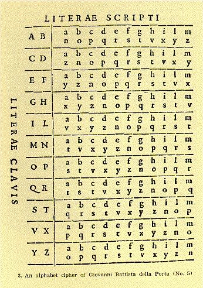

Criptografía Clásica
La criptografía clásica se basa en algoritmos sencillos y claves muy largas para la seguridad.
El cifrado por sustitución se basa en la sustitución de cada letra o grupo de letras por otra letra o grupo de letras para disfrazarla.
La trasposición llega a consistir en cambiar los caracteres de los componentes del mensaje original en otros según una regla que es determinada de posición en el orden del mensaje.